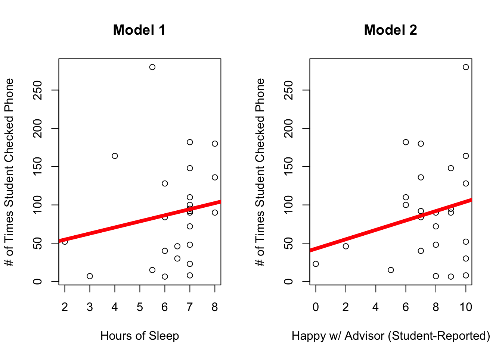
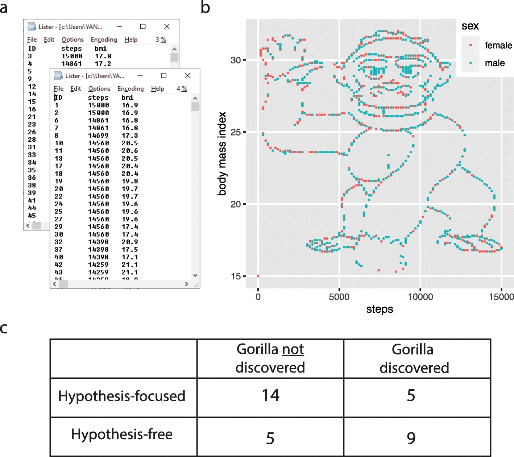
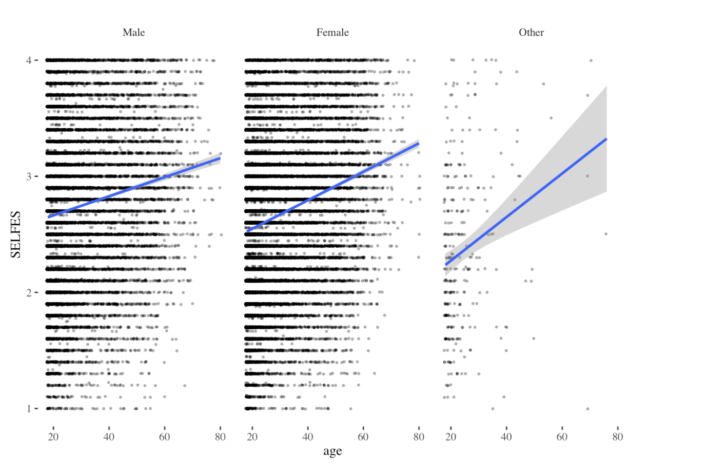
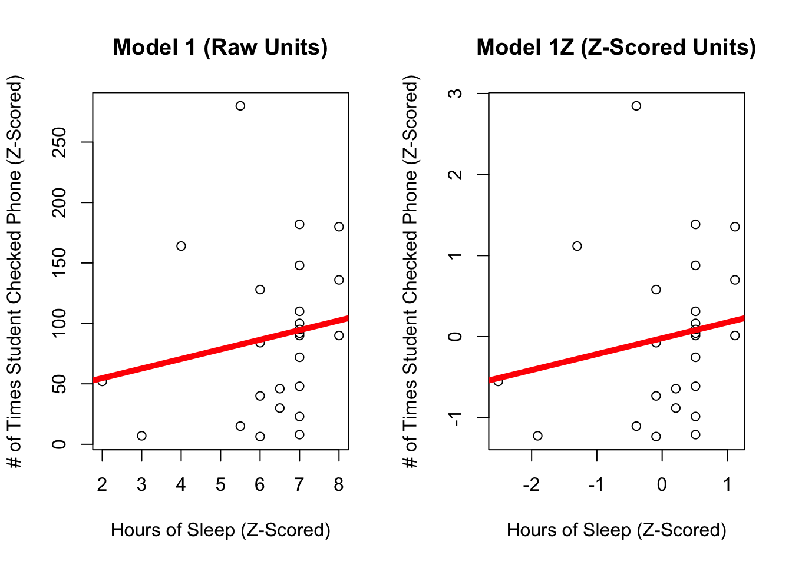
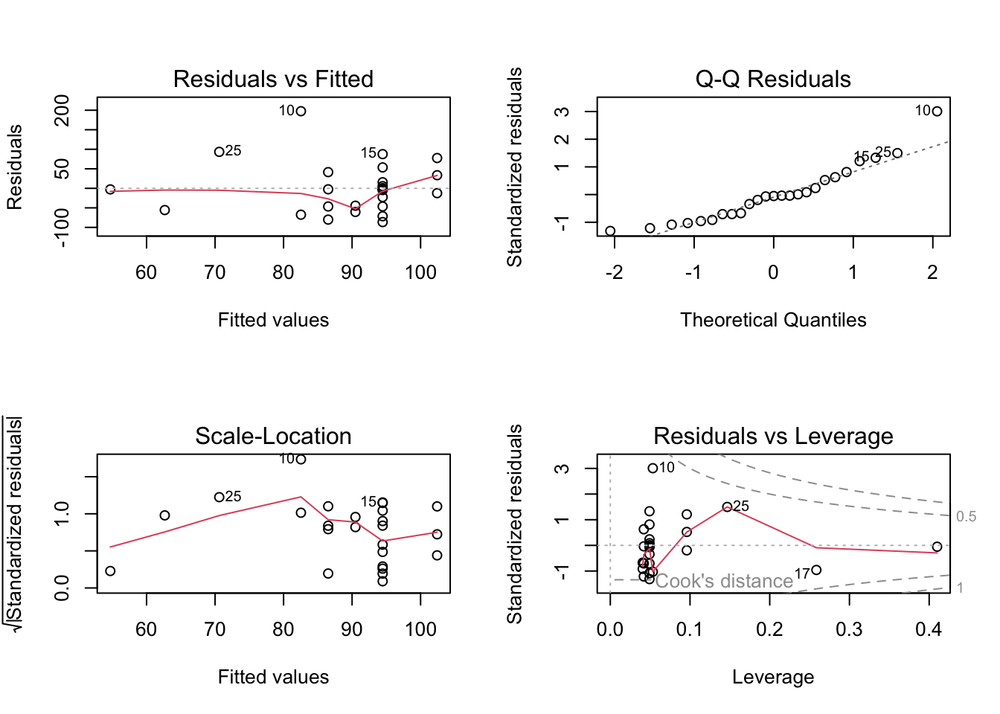

Instructions. Use the graphs and output below to answer the following questions about the relationship between how often students checked their phone (DV) and how many hours of sleep they had (IV in Model 1) and how happy they said they were with their advisor (Model 2). Here’s a link to the data if you want to follow along.
Code
par(mfrow =c(1,2))plot(check.phone ~ hrs.sleep, data = g,ylab ="# of Times Student Checked Phone", xlab ="Hours of Sleep",main ="Model 1")mod1 <-lm(check.phone ~ hrs.sleep, data = g)abline(mod1, lwd =5, col ='red')plot(check.phone ~ cooladvisor, data = g,ylab ="# of Times Student Checked Phone",xlab ="Happy w/ Advisor (Student-Reported)",main ="Model 2")mod2 <-lm(check.phone ~ cooladvisor, data = g)abline(mod2, lwd =5, col ='red')

The intercept and slope is reported for each linear model.
Intercept Slope Sample Error (Slope)
Model 1 38.8 8.0 11.1
Model 2 42.8 6.1 6.0
Use Models 1 and 2 to answer the questions below.
Describe the relationship in Model 1. What do you observe? Why do you think this relationship exists?
Describe the relationship in Model 2. What do you observe? Why do you think this relationship exists?
What is the predicted amount of phone checking for someone who got zero hours of sleep?1. …for someone who got four hours of sleep?
…for someone who’s 0/10 happy with their advisor?
…for someone who’s 10/10 happy with thier advisor?
Which variable is a better predictor of the number of times someone checks their phone?
How can you tell?
More on Graphs, and Sample Bias.
The Monkey in Lab 4
What are our takeaways from this example?
Did you find the gorilla? Why / why not??
Research found that when people were given a hypothesis, they were less likely to see the gorilla in the data then when left to “explore” the dataset on their own.

ggplot2 review
Which graph (representing how the relationship between age and self-esteem changes depending on whether someone is Male, Female, or Other) do you like the most? Why??

Evaluating Linear Models : Z-Scores and Assumptions
Z-Scores to Aid Interpretation.
When we z-score a variable, we describe how far an individual score falls from the mean, in units of standard deviation. This gives us more context about how much an individual differs from the mean (relative to others). Z-scoring a variable also removes the units of measurement (since the units are on the numerator and denominator, so they divide out.) The z-score is considered a linear transformation, because the fundamental order of the data do not change. (We’ll later talk about non-linear transformations, such as quadratic or logarithmic transformations.)
When we z-score both variables in a model, we are describing the relationship between the two variables in units of standard deviation. This is commonly known as the correlation coefficient (\(r\)). And so the slope of a linear model where the DV and IV have been z-scored is equivalent to a correlation.
Z-Scoring in a Linear Model
We can test this with the code below. Look at the graphs - what’s different? what’s the same?
Code
par(mfrow =c(1,2))plot(check.phone ~ hrs.sleep, data = g,ylab ="# of Times Student Checked Phone (Z-Scored)",xlab ="Hours of Sleep (Z-Scored)", main ="Model 1 (Raw Units)")mod1 <-lm(check.phone ~ hrs.sleep, data = g)abline(mod1, lwd =5, col ='red')plot(scale(check.phone) ~scale(hrs.sleep), data = g,ylab ="# of Times Student Checked Phone (Z-Scored)",xlab ="Hours of Sleep (Z-Scored)", main ="Model 1Z (Z-Scored Units)")mod1Z <-lm(scale(check.phone) ~scale(hrs.sleep), data = g)abline(mod1Z, lwd =5, col ='red')

Note that the data and regression line do not change, but our units are different.
The Intercept : The Predicted Value of Y when ALL X values are Zero.
In Raw Units :
Standardized (Z-Score) :
The Slope : The Change in Our Predicted Value of Y when X Changes By One.
In Raw Units :
Standardized (Z-Scored) :
Note that the correlation coefficient should be equivalent to the standardized slope with one IV, and that this is the square root of our good friend \(R^2\).
Code
coef(mod1Z)[2] # our standardized slope
scale(hrs.sleep)
0.1961319
Code
summary(mod1)$r.squared # our R^2 value
[1] 0.02955576
Code
summary(mod1)$r.squared^.5# the square root of R^2 = r = the correlation coefficient
[1] 0.1719179
Code
cor(g$check.phone,g$hrs.sleep, use ="pairwise.complete.obs") # r = the correlation coefficient
[1] 0.1719179
Uh oh, it’s not exactly the same! Close, but different….why might this be?
NOTE : There’s also a function standardize() from the arm package (authored by stats wizards Andrew Gelman and Yu-Sung Su) that will automatically z-score the terms in your model. This uses a slightly different calculation for the z-score - rather than divide by one standard deviation, the authors recommend dividing by two standard deviations. You can read more about this logic here. This function is helpful when you have multiple IVs, or some IVs are not numeric (but you still want or need to standardize them; we’ll talk more about these methods when we start working with categorical/binary variables.)
Code
library(arm)
Loading required package: MASS
Loading required package: Matrix
Loading required package: lme4
arm (Version 1.14-4, built: 2024-4-1)
Working directory is /Users/adcat/Documents/Documents - minicat/catterson.github.io/gradstats/gradlabs
Work with a buddy. Load the mini_grad dataset (also in our Dropbox Dataset folder) and use these data to do the following.
Graph the variable stress. What do you observe?
Choose another numeric variable that you think will predict stress. Why did you choose this variable? What theory do you have?
Define a linear model to predict stress from this IV. What is the slope, intercept, and \(R^2\) of this model (in raw and z-scored units)? Graph the relationship between these variables, making sure to illustrate the linear model.
Then, use bootstrapping to estimate the 95% Confidence Interval for the slope and estimate the power researchers had to detect any observed relationship. (Cool if you can add lines to illustrate the 95% Confidence Interval) on your graph. Below the graph, describe what these statistics tell you about the relationship between these two variables.
The interpretation of our linear model depends on a variety of different assumptions being met. You can read more about these from the great Gelman & Hill’s textbook : Data Analysis Using Regression. But below is a TLDR, with a few ideas of my own thrown in :)
Validity. Is your linear model the right model to answer the research question that you have? This is the big question, and often goes beyond the specific statistics that we are focusing on. Did you include the right variables in your model, or are you leaving something out? Are you studying the right sample of people, drawn from the right population? Are your measures valid? This is hard to do, and good to remember that it is hard so you ask yourself “am I doing a good job”?
Reliability of Measures. The variables in your linear model should be measured with low error (“garbage in, garbage out”). There are different ways to assess reliability.
Cronbach’s alpha (psych::alpha()) is good for assessing the inter-item reliability of a likert scale.
The Intraclass Correlation Coefficient (ICC) is often used for observational ratings where multiple judges form impressions of the same target.
Test-retest reliability is a great way to ensure that physiological or single-item measures will yield repeatable measures over time (assuming the target of measurement has not changed between time points). One way to test this is to define a linear model to predict the measure at one time point from the measure at another; you’d expect to see a strong relationship.
Independence. This is a big one - the residuals in your model need to be unrelated to each other. That is, I should not be able to predict the value of one error from another error. When the data in a linear model come from distinct individuals who are unrelated to each other, this assumption is usually considered to be met. However, there are often types of studies where the data are not independent.
Nested Data : Often times, individuals in a dataset belong to a group where there’s a clear dependence. For example, the happiness of individual members of a family is probably dependent on one another (since they share the same environment, stressors, etc.); the test-scores of children in a school are probably all related to each other (since they share the same teachers, administrators, funding, lead exposure in the drinking water, etc.)
Repeated Measures : If a person is measured multiple times, then their data at one time point will be related to their data at the second time point, since they are coming from the same person, with the same past experiences and beliefs and genetics and all that other good stuff.
If the data are not independent, then we will need to account for the dependence in the data. We will learn to do this when we review Multilevel Linear Models. (Spoiler : it’s more lines.)
Linearity. The dependent (outcome) variable should be the result of one or more linear functions (slopes). In other words, the outcome is the result of a bunch of straight lines. If the straight lines don’t properly “fit” or “explain” your data, then maybe you need some non-straight lines…you could bend the line (add a quadratic term), look for an interaction term (that tests whether there’s a multiplicative relationship between the variables), or apply a non-linear transformation to the data (i.e., often times income is log transformed, since a 9,000 point difference between 1000 and 10,000 dollars/month is not the same as a 9,000 point difference between 1,000,000 and 1,009,000 dollars/month).
Equal Variance of Errors (Homoscedasticity). The errors associated with the predicted values of the DV (the residuals) should be similar for all different values of the IV. Homoscedasticity means that the residual errors in our outcome variable are distributed the same across the different values of the IV. Heteroscedasticity means there is some non-constant variability in errors, which means that your model may not be an appropriate explanation of the data.
Normality of Errors (Residuals and Sampling). This assumption is less emphasized as our datasets have gotten larger, and methods for estimating sampling error have improved. But the basic idea is that statistics like confidence intervals and estimates of slopes assume that the errors in our model are normally distributed. If they are not, it’s likely that your model is not appropriately fitting the data (i.e., maybe some outliers are influencing the results.)
Testing Assumptions in R
Assumptions 1-3 require critical thinking about your methods and measures.
Assumptions 4 and 5 can be examined using the plot() function in base R - you may have accidentally come across these when trying to graph your linear model.
Code
par(mfrow =c(2,2))plot(mod1)
Assumption 6 can be examined by graphing the residuals of your model object with a histogram.
Code
par(mfrow =c(1,1))hist(mod1$residuals)

Okay! These are the basics of linear models. For Lab 5, you’ll take a practice mini exam that brings all these ideas together. I’ll post a key so you can check your work / understanding before the mini exam. We will continue to work with linear models for many weeks; and build more complexity to try and make better, more valid, predictions. Yeah!!